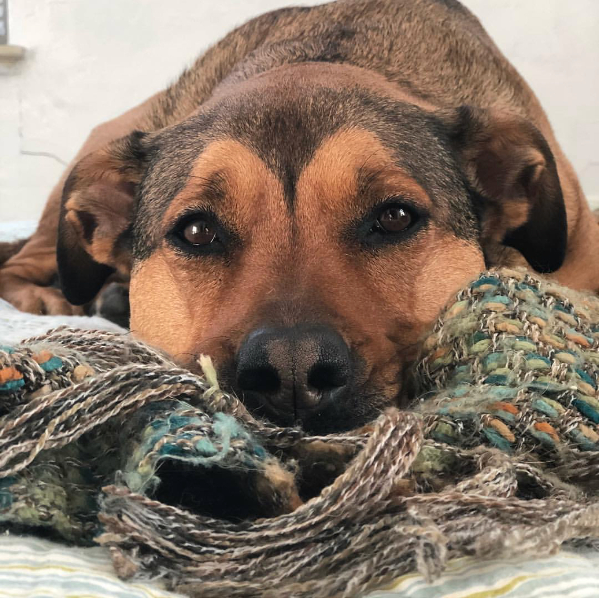

Welcome to a my resumap!
I created this map in supplement to my resume and coverletter. I believe with all my experience and travel it can be a great way to showcase my skills and knownledge better.
I grew up in Connecticut
I joined the United States Navy right out of High School in 2005
During my service I was stationed all along the East Coast mainly out of Florida. I also did two tours in the Middle East working along side Third County Nationals providing base support and operations.
In 2014 I moved to The Big Island on Hawaii. I worked for SolarCity, designing and installing residential solar panels.
